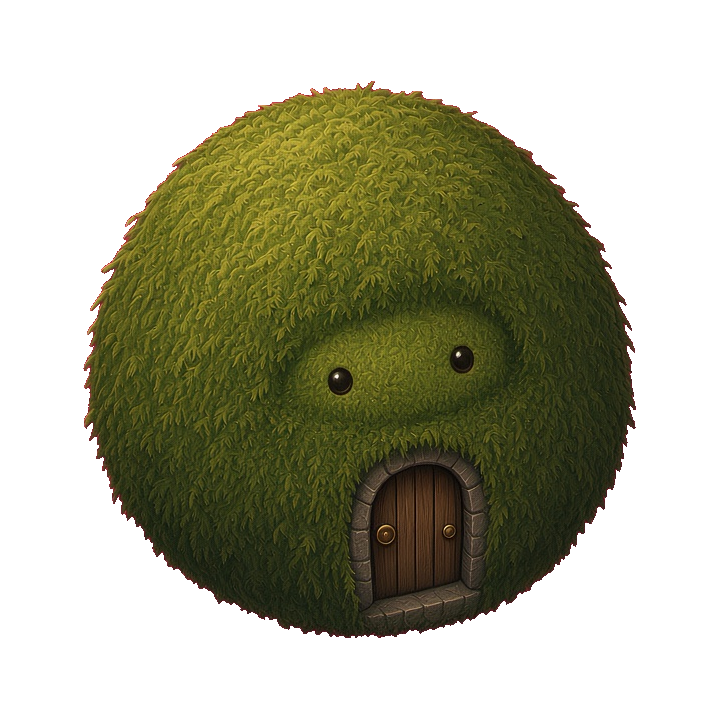

La sesión
Eliges los minutos y el lugar. El tiempo se mide de verdad. Mientras dura, las aplicaciones que marcaste pueden esperar.
Concentración en el teléfono. Un claro que crece con ella.
Tu concentración construye tu mundo.

Eliges los minutos y el lugar. El tiempo se mide de verdad. Mientras dura, las aplicaciones que marcaste pueden esperar.
Mientras tú te concentras, los Iratxoak trabajan. Vuelven con lo que la salida ha dado. La aldea se ve: no se resume en una tabla.
Sin cuentas, sin anuncios y sin servidor. Lo que haces se queda en el aparato. Nada se envía a nadie.
La inspiración es la mitología vasca, tratada con respeto. No hay combate ni rival. El protagonista eres tú: los Iratxoak ayudan, y el claro existe porque te has concentrado.